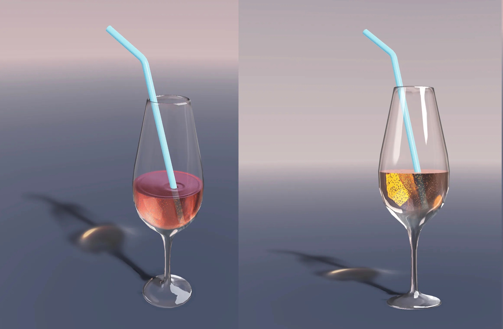
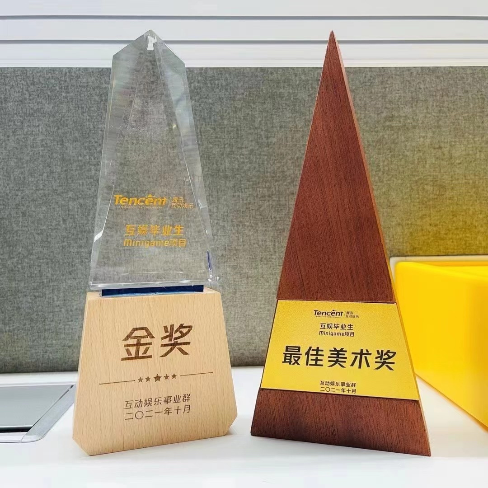
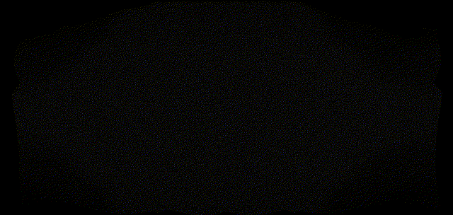
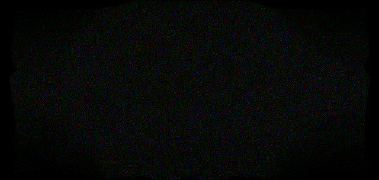
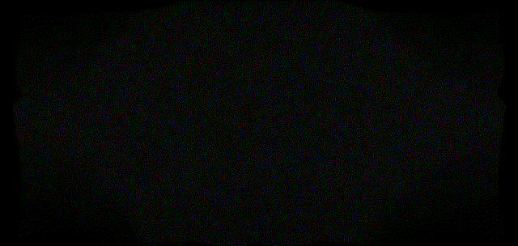

Questionnaire Website
Abstract:
The website focuses on automating the process of creating questionnaires for research, particularly in the social science domain. Instead of manually crafting each questionnaire for new research, the platform uses a templating system to generate them. This not only enhances efficiency but also ensures consistency across various studies.
Techs:
The cornerstone of this automation is the utilization of CSV files to define questionnaires. The CSV format is a universally recognized data representation, making it both accessible and easy to use. By using CSV as the defining structure, researchers can lay out their questions, answer options, and other related parameters in a structured manner.
Another technological highlight is the platform's ability to support "Random Question Sets." This feature ensures that, while the base questions remain consistent, there's an element of variability introduced, making the questionnaire dynamic and adaptable to different research needs.
Usage:
To use the website:
- Define your questionnaire in a CSV format. This involves listing out your questions, potential answers, and any other relevant details.
- If you wish to introduce variability, leverage the "Random Question Set" feature. This allows certain questions to be randomly selected from a pre-defined pool, introducing an element of unpredictability in the questionnaire.
- Once defined, the platform will use the templating system to generate HTML files for the questionnaire, ready to be deployed or integrated into web platforms.
See more usage details on GitHub: Questionnaire-Website Repository.
The demo website SocWebresearch
Glass Material Rendering
Demo

Abstract
I present a low-cost glass material rendering solution for Unity3D. I address the challenges of real-time glass rendering, particularly the simulation of reflection and refraction effects. By utilizing MatCap textures and a flexible shader implementation, I provide an efficient and portable method for achieving realistic glass materials.
Motivation
Glass materials have always been challenging to render in real-time, especially on resource-constrained devices. This portfolio showcases the limitations of existing glass rendering techniques in popular console games like Final Fantasy VII Remake and Red Dead Redemption 2. I aim to overcome these limitations and offer a more accurate and visually appealing glass material rendering solution.
Problem
Glass materials involve two key components: reflection and refraction. Simulating these effects in real-time is computationally intensive, leading to suboptimal results on devices with limited performance capabilities. I tackle the challenge of achieving realistic glass refraction, which is crucial for accurately depicting the visual distortion caused by the thickness of the glass.
Code
The complete C# code for implementing the glass material rendering shader in Unity3D can be found on my GitHub repository. The code includes sections for handling environmental highlights reflection and glass refraction, along with the addition of normal details to enhance surface realism.
Results
The portfolio showcases real-time screenshots from Unity3D demonstrating the effectiveness of the glass material rendering solution. The screenshots display glass objects with accurate reflection and refraction effects, providing a visually appealing rendering outcome.
Discussion: More Advanced Usages
The portfolio goes beyond the basic glass material rendering and explores more advanced applications. It covers techniques for creating frosted glass, handling multiple layers of glass and liquids, and achieving a cracked ice effect on glass surfaces. These advanced usages demonstrate the flexibility and versatility of the implemented glass material rendering solution.
Caveats
It's important to note that this portfolio is not an academic research article but rather a practical implementation of glass material rendering in Unity3D. The solution focuses on visual aspects rather than complex algorithms or ray tracing techniques. The portfolio is intended to inspire and provide a starting point for developers looking to improve their glass material rendering in real-time scenarios.
References & Tutorials
- YouTube Tutorial: MATCAP textures
- Unity Wiki: MatCap Tutorials
More Details
Free Casonry
Demo

About
- This is an independent, narrative and storytelling management mobile game based on Unity3D Engine.
- Complete code in C# based Unity3D is at Github.
Overview
Players take on the role of cats and run the Cat Masons. The cats will conspire in the ancient European court to try to overthrow the human regime.
Prize
- Tencent Minigame Project Gold Award, 2021.
- Tencent Minigame Best Art Award, 2021.

 


Installation
More Details


Copyright © 2015 Powered by MWeb, Theme used GitHub CSS.